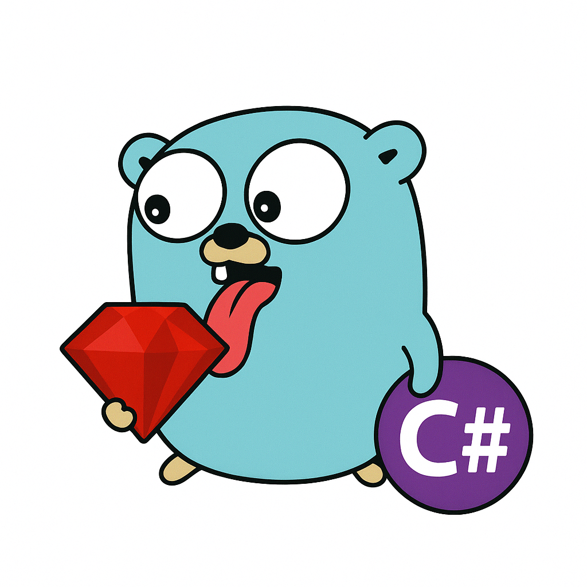
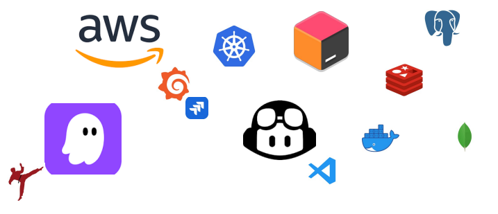

HOAN PHUNG
Ruby on Rails Lead / Software Architect
HCMC, Vietnam ·
phungthehoan98@gmail.com ·
+84 398 704 477

PROFESSIONAL SUMMARY
Senior Ruby on Rails Engineer with 5+ years of experience and 1+ year of hands-on Golang development, evolving into a Director Technical Lead. Expertise in system design, distributed architectures, scalability, and production reliability for high-traffic platforms. Proven track record of leading engineering initiatives, designing microservices-based systems, and delivering secure, high-performance solutions in healthcare and fintech domains.
WORK EXPERIENCE
DELIVEREE — Senior Software Engineer / Tech Lead
- Led a 10-member production team, including 4 backend engineers, overseeing system operations, incident management, and hotfix deployments to maintain high availability and performance.
- Architected and implemented core features, including configurable surcharge pricing models, secure payment gateway integrations, and cashback credit functionality.
- Integrated client systems with the platform using public APIs.
- Design dashboards and high-level queries for system monitoring.
- Worked closely with DevOps to design and implement cloud infrastructure and deployment strategies on AWS/GCP, improving scalability, availability, and cost optimization.
- Optimized Go-based microservices architecture, reducing P95 latency by 80% and improving system reliability.
- Optimized the core Ruby application build process, reducing CI build time from approximately 30 minutes to 14 minutes.
- Collaborated closely with Product Managers and Business Analysts (BA) to discuss requirements, refine feature scope, and translate business needs into technical solutions.
- Coordinated cross-functional teams and conducted code reviews for production-bound pull requests, ensuring system quality and alignment with business requirements across the entire platform.
- Designed and executed a data archiving strategy for inactive system records (2016–2023), optimizing database performance and reducing storage costs.
- Development an AI-driven Development Life Cycle (DLC) framework using Kiro AI to streamline workflows, improve code quality, and accelerate delivery.
BESTARION — Full-stack Developer with Ruby on Rails
- Engineered healthcare and fintech platforms within a 10-member team, strengthening the company’s core architecture and improving system scalability.
- Designed and developed APIs, reporting systems, and mobile integrations to support business operations.
- Contributed to system architecture design and managed production deployments for the CDS (Career Development System) project.
SYSTEM DESIGN & ARCHITECTURE
- Distributed systems & microservices architecture
- Scalability strategies (horizontal scaling, caching, async processing)
- High availability, fault tolerance, and resiliency patterns
- API design, versioning, and backward compatibility
- Observability: logging, metrics, tracing
TECHNICAL SKILLS
Backend: Ruby on Rails, Go (Golang)
Databases: PostgreSQL (indexing, query optimization), MongoDB, Elasticsearch, Redis
Frontend: HTML, CSS, JavaScript, React.js, ExtJS
Messaging: Kafka, Sidekiq, background jobs
Cloud & DevOps: AWS, Kubernetes, Jenkins, CI/CD
Monitoring: Grafana, Kibana, Graylog, Sentry
AI & Dev Tools: GitHub Copilot, Kiro, JetBrains IDEs, VS Code
EDUCATION
Bachelor of Information Technology
Ho Chi Minh City University of Food Industry (2016–2020)
GPA: 3.01 / 4.0
